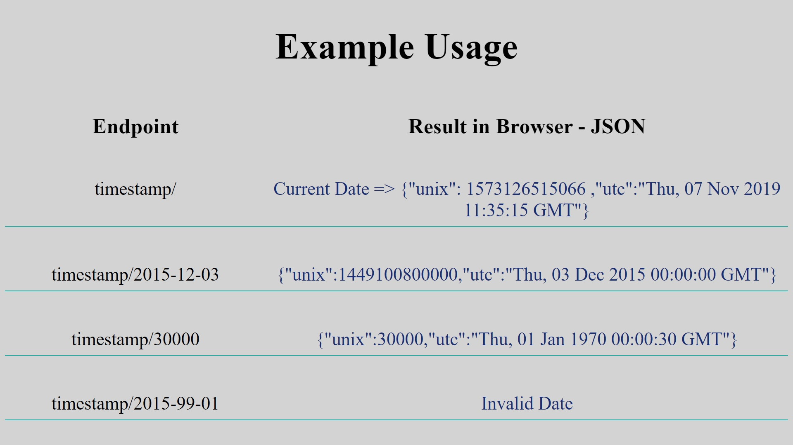

About me
My passion for programming started when I was doing my first internship in Spain, when I started learning Python in order to automate the sending of personalized emails to clients. I had zero programming knowledge before that and the script was very simple.
Since then I never stopped programming, although very small things in Python and AutoHotkey, a scripting language for automation, including 2 summer months in which I fully dedicated myself to learning web development before starting my Masters degree.
Now I'm back at learning web development and I'm commited to starting a career in it.
In the last 2 months I have spent a big amount of effort on learning Angular 8.
The project in this section was made in 2.5 weeks in order to practice everything after learning a big amount of Angular theory in the previous 2 months. The project has a lot of Angular features: Components, String Interpolation, Data,Event and Property Binding, directives(ngIf,ngFor),@ViewChild Decorator,Services, the Router module, the Http module for CRUD operations, and local references, among others.

The project has 2 pages: Home and Quotes. On the first page the user can generate random quotes received from a Google Firebase database, and also add their own quotes. On the second page the user can see all the quotes stored on the database and edit each one of them and delete them from the database.
There is also a button that resets the quotes in the database to the original ones I created.
These project ideas were taken from FreeCodeCamp, an online learning platform focused on Full-Stack Web Development. Everything here is made by myself starting from a very basic boilerplate template. They were made to practice and extend my knowledge in NodeJs, Node Package Manager(NPM), the Express package and MongoDB and Mongoose.

This project uses Node.js, Express and also a MongoDB cloud database for the URL's. What it does is receive a website url from the user, check if it's a valid url, and then add it to a MongoDB database and also generate a shorter version of it(id). The user can access this url by going to an endpoint with the id/short url.

Simple project that returns some information about the client, like IP address, languages used and software details when you go to the endpoint.

This project converts between Unix time epoch and normal dates, and returns a JSON file. It uses Node.js and the Moment and Express Npm packages. More description on the image.
These projects were made in order to learn and practice Javascript after I had some solid knowledge of HTML and CSS

Javascript project made to advance my knowledge of the DOM.
Compared to other similar projects my JavaScript is too complex and long, but it was good practice.

Simple calculator I made to learn how to better use Javascript along with HTML and CSS. The layout was made with CSS grid and the calculator logic with Javascript.

My first project ever with Javascript. It allows you to manipulate a square block with panels that control the position, size, color,shape and opacity of the block.
These are my first project in Front-End. They only contain HTML and CSS

This is my old CV in a HTML and CSS format. The Resume was made first with Microsoft Word, and this one with HTML and CSS.
Both the Word version and this web versions were made by myself from 0.

Visually simple,it was created very fast with Bootstrap assets, but it's also a more advanced website in terms of functionality than Gotham and Exoticar.

This page is similar to Exotticar, except it's a bit more advanced. It has a searchbar, a self made calendar and many more elements that change when hovering with the mouse or using them.

My first Project. I learned a lot regarding element positioning. It has simple things like tables, superposing text over a image, 2 columns in a same row, buttons, elements that change when hovering.